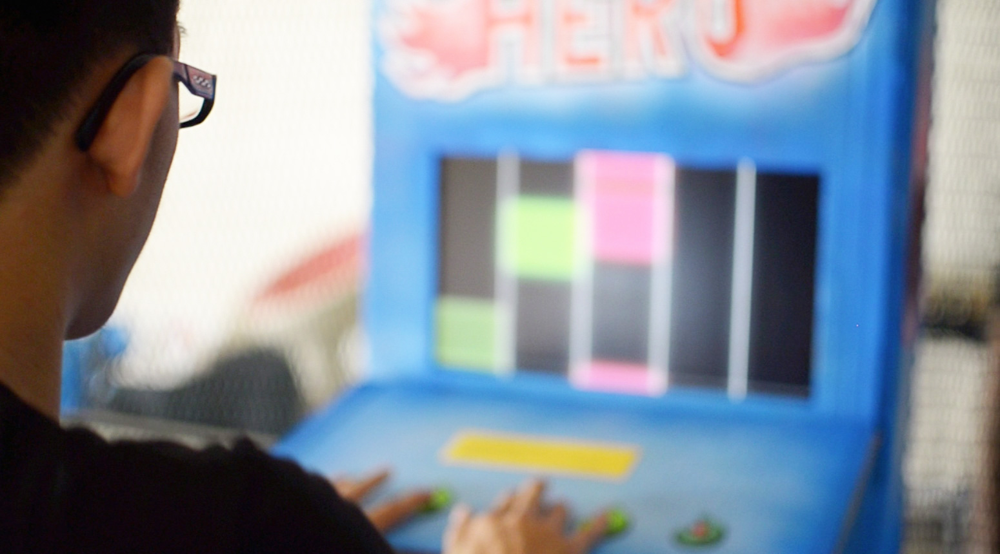
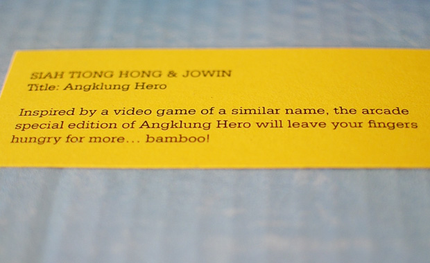

Interface, Installation, Collective work. Singapore Feb 2012.

Angklung Hero is an installation work created with a friend, Siah.
Angklung is a musical instrument made of two bamboo tubes attached to a bamboo frame. The instrument originated in today’s Indonesia and has been played by the Sundanese for many centuries.
Inspired by a video game of a similar name, the arcade special edition of Angklung Hero will leave your fingers hungry for more... bamboo!
The work was participated in Project KLUNG! which is organised by Chasm Collective.
Angklung is a musical instrument made of two bamboo tubes attached to a bamboo frame. The instrument originated in today’s Indonesia and has been played by the Sundanese for many centuries.
Inspired by a video game of a similar name, the arcade special edition of Angklung Hero will leave your fingers hungry for more... bamboo!
The work was participated in Project KLUNG! which is organised by Chasm Collective.


Copyright © 2013 jowin.co // All rights reserved.